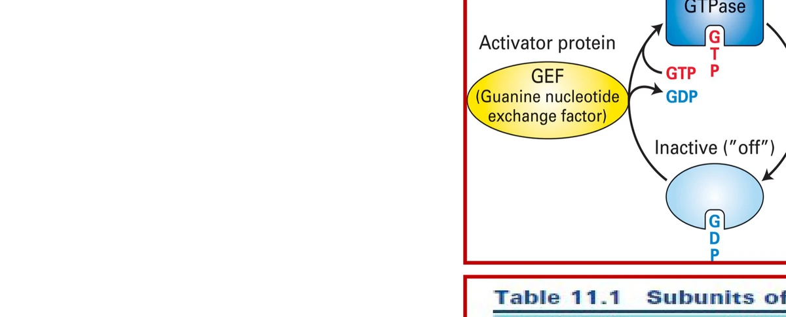
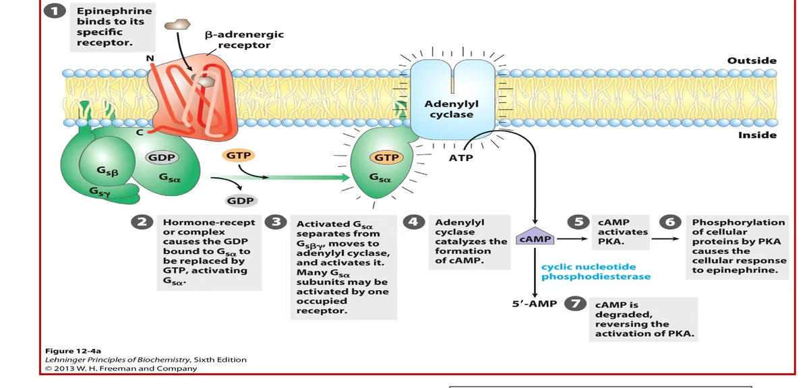
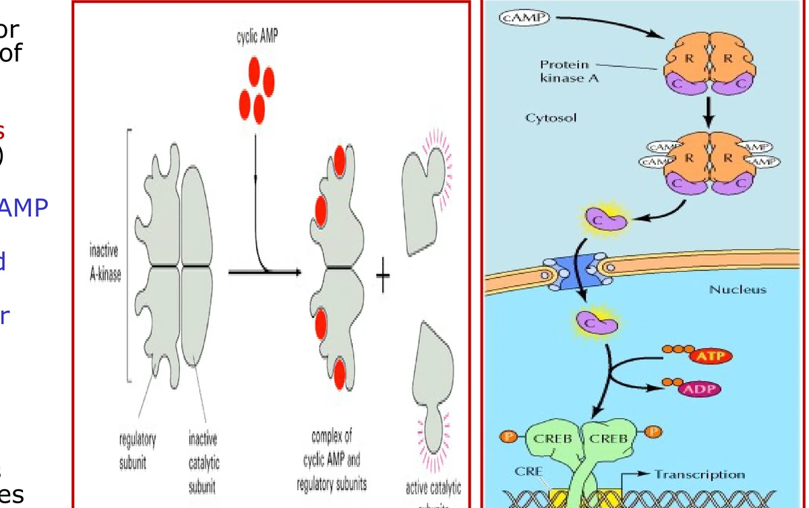
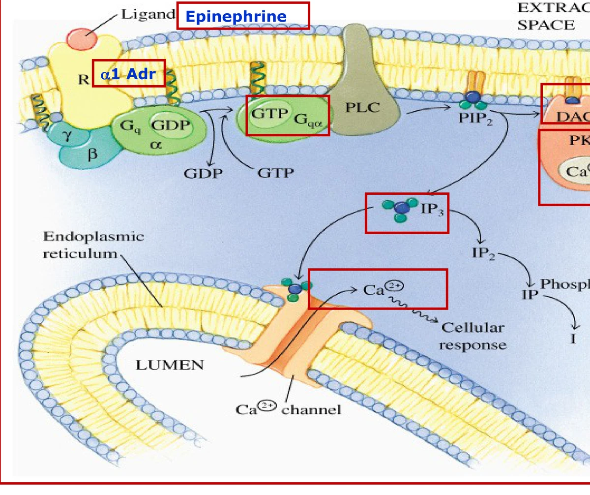
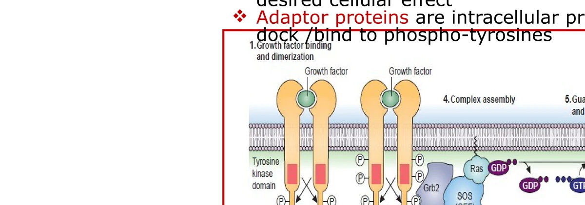
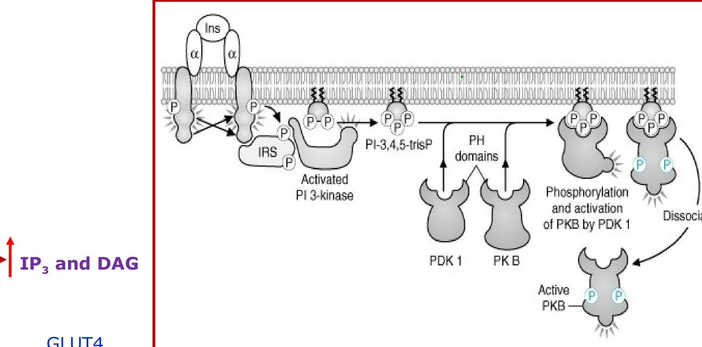

Lecture 04 — Signal Transduction
VS boxes = pairs that are routinely confused; the underlined red word is the single feature that tells them apart.
Orientation
A cell responds only if it carries the matching receptor. Hydrophilic ligands use membrane receptors and intracellular relays; lipophilic ligands reach cytosolic or nuclear receptors. Every arm needs a termination step — GTP hydrolysis, phosphodiesterase, or phosphatase — and when that timer breaks, disease follows. Fed/fasting hormone logic is Lecture 01; the full adenylyl cyclase cascade is Objective 2.
Interactive pathway map → All nine pathways laid out stage by stage so they can be compared column by column, traced one at a time, or hidden step by step to test recall.
Objective 1 / Steps, signals, and receptors
System origins
The nervous system releases neurotransmitters; the endocrine system releases hormones; the immune system releases cytokines (lymphokines from lymphocytes, monokines from monocytes/macrophages, interleukins from and acting on leukocytes). Growth factors drive proliferation and differentiation. Eicosanoids — prostanoids (prostaglandins, thromboxanes) and leukotrienes — and retinoids are additional signaling classes covered later in metabolism. A signal (ligand) may be a neurotransmitter, hormone, cytokine, growth factor, eicosanoid (prostanoids, leukotrienes), retinoid, or nitric oxide. Only cells bearing the matching receptor respond; receptors are proteins. Signaling range is summarized below.
| Mode | Target distance | Example context |
|---|---|---|
| Autocrine | Same cell | Signaling cell = target cell |
| Paracrine | Adjacent | Local diffusion to neighbors |
| Endocrine | Distant | Circulating hormone to remote tissue |
| HydrophilicPeptide and protein hormones (e.g. insulin). Bind plasma-membrane receptors; no transport protein in blood; shorter half-life. | LipophilicSteroid–thyroid superfamily (steroids, thyroid hormone, vitamin D, retinoic acid). Cross the bilayer; use intracellular receptors (cytosolic or nuclear); require transport proteins; longer half-life. |
Once bound, intracellular receptors induce or repress target genes — the long-term regulatory arm.
Plasma-membrane receptor classes
| Class | Structure | Example ligand | Downstream |
|---|---|---|---|
| Ion-channel receptor | Ligand-gated pore | Neurotransmitters (e.g. ACh at nicotinic synapse) | Ion flux across membrane |
| GPCR (heptahelical) | Seven transmembrane helices + trimeric G protein | Epinephrine, glucagon | Second messengers via effectors (Obj 2) |
| Intrinsic Tyr kinase (RTK) | Single TM span; kinase in cytosolic tail | Growth factors, insulin | SH2 adapters → Ras–MAPK or PI3K (Obj 4–5) |
| Associated Tyr kinase | Receptor-associated JAK | Cytokines | JAK–STAT (rapid nuclear response) |
| Ser/Thr kinase receptor | Intrinsic Ser/Thr kinase | TGF-β | Smad transcription factors |
Once a hydrophilic ligand binds, the receptor may phosphorylate Tyr/Ser/Thr residues, recruit SH2-domain adapters (Grb2, STAT, Smad, PI3 kinase, phosphatase — keep separate from second messengers), or activate a heterotrimeric G protein. Hydrophilic messengers never enter the nucleus themselves; nuclear effects require intermediate transcription factors such as CREB (Objective 3) or STAT dimers (Objective 4).
Receptor class predicts speed and chemistry. Ion-channel receptors change membrane potential in milliseconds. GPCRs generate diffusible second messengers over seconds. RTK and JAK–STAT pathways reach the nucleus through adapter cascades; JAK–STAT is the shorter route. Ser/Thr kinase receptors for TGF-β feed Smad transcription factors during development and osteogenesis.
Nitric oxide is a special case — a diffusible gas that acts without a membrane receptor protein (Objective 2). Intracellular receptors sit in the cytosol or the nucleus; both routes end in transcriptional change rather than a membrane second-messenger cascade. The steroid–thyroid superfamily includes classical steroids, thyroid hormone, vitamin D, and retinoic acid.
Objective 2 / GPCRs, G proteins, effectors, and second messengers
Ligand binding catalyzes exchange of GDP for GTP on Gα. Gα–GTP dissociates from the βγ dimer and activates a membrane-bound effector. G proteins bind GTP or GDP and carry intrinsic GTPase activity: hydrolysis of GTP back to GDP returns Gα to its inactive state. One hormone molecule activates many G proteins, each generating many second-messenger molecules, each activating many kinases — amplification is why cascades exist.


In the resting state, Gα binds GDP and the Gβγ complex anchors the heterotrimer at the inner leaflet. Activated GPCR acts as a guanine-nucleotide exchange factor (GEF), promoting release of GDP and binding of GTP. Gα–GTP has lower affinity for both the receptor and Gβγ, so it dissociates and diffuses to its effector. Effectors are membrane-bound or membrane-associated enzymes — not freely soluble kinases. The βγ dimer can also signal independently in some pathways, but the exam focuses on Gα. When Gα hydrolyzes GTP → GDP + Pi, it re-associates with Gβγ and the cycle resets. Cholera toxin, pertussis toxin, and oncogenic Ras mutations all interrupt this hydrolysis step.
The authoritative pairing of ligand, receptor, G protein, effector, and second messenger lives in the table — not repeated in prose.
| Ligand | Receptor | G protein | Effector | Second messenger |
|---|---|---|---|---|
| ★ Epinephrine | β-adrenergic | Gs (+) | Adenylyl cyclase | ↑ cAMP |
| ★ Epinephrine | α2-adrenergic | Gi (−) | Adenylyl cyclase | ↓ cAMP |
| ★ Epinephrine | α1-adrenergic | Gq (+) | Phospholipase Cβ | IP₃ + DAG |
| Glucagon | Glucagon receptor | Gs (+) | Adenylyl cyclase | ↑ cAMP |
Glucagon receptors are absent in skeletal muscle (present in liver and adipose). Insulin activates phospholipase Cγ (not β) — a separate arm covered in Objective 5.
| GsαStimulates adenylyl cyclase → ↑ cAMP. | GiαInhibits adenylyl cyclase → ↓ cAMP. |
Adenylyl cyclase and phosphoinositide arms
The adenylyl cyclase arm and the phosphoinositide arm are mutually exclusive outputs of different Gα subtypes — a single receptor couples to one G protein, and that G protein selects one effector. cAMP from the cyclase arm feeds PKA; the phosphoinositide arm splits into parallel Ca²⁺ and PKC signals from one PLC cleavage event.
Gqα activates phospholipase Cβ, cleaving membrane PIP₂ into IP₃ and DAG. The five major intracellular second messengers are cAMP, cGMP, IP₃, DAG, and Ca²⁺.


| IP₃Water-soluble; diffuses to the ER and opens an IP₃-gated Ca²⁺ channel, raising cytosolic calcium. Ca²⁺–calmodulin activates CaM kinases. | DAGMembrane-bound diacylglycerol; activates PKC (with phosphatidylserine; some PKC isoforms also need Ca²⁺). PKC phosphorylates downstream proteins. |
| PKAActivated by cAMP (Gs/Gi pathways). Phosphorylates serine/threonine targets in cytosol and nucleus. | PKCActivated by DAG (± Ca²⁺) at the membrane (Gq/α1 pathway). Distinct substrate set from PKA. |
Nitric oxide (NO) is a diffusible gas — no membrane receptor. Parasympathetic acetylcholine on endothelium activates eNOS, which synthesizes NO from arginine using O₂ and NADPH (half-life 2–30 s). NO activates soluble guanylyl cyclase → cGMP → protein kinase G (PKG), phosphorylating smooth-muscle proteins and promoting vasodilation (EDRF). Nitroglycerin and isosorbide mononitrate release NO (venodilation; angina relief). Sildenafil, vardenafil, and tadalafil inhibit PDE5, blocking cGMP degradation — used for erectile dysfunction. PDE5 is cGMP-specific and enriched in corpus cavernosum and retina. For NO to relax vascular smooth muscle, cGMP must remain elevated; PDE5 inhibition prolongs the cGMP signal that PKG transduces into phosphorylation of contractile proteins and activation of phosphatases that inhibit actin–myosin interaction.
Bacterial toxins covalently modify Gα by transferring ADP-ribose from NAD⁺. The disease table records which residue, which activity state, and which disease. The causal point that exams probe: freezing Gs on and freezing Gi off both raise cAMP. In cholera, elevated enterocyte cAMP phosphorylates the apical CFTR channel, driving secretion of Na⁺, Cl⁻, H₂O, and HCO₃⁻ — a medical emergency requiring electrolyte repletion.
| CholeraHits Gsα → frozen ON. | PertussisHits Giα → frozen OFF. |
| Agent / mutation | Target | Activity state | 2nd messenger / signal | Disease |
|---|---|---|---|---|
| ★ Cholera toxin | Gsα (Arg ADP-ribosylation from NAD⁺) | Frozen ON (GTP) | ↑ cAMP | Rice-water stool |
| ★ Pertussis toxin | Giα (cysteine ADP-ribosylation) | Frozen OFF (GDP) | ↑ cAMP | Whooping cough |
| ★ Ras mutation | Monomeric Ras | Locked GTP-bound | Persistent MAPK | Cancer |
| ★ Neurofibromin loss (NF1) | Ras GAP lost | Ras stays GTP-bound | Persistent MAPK | Neurofibromatosis |
Objective 3 / Epinephrine and glucagon via GPCR
Triggers and tissues
Glucagon is released from pancreatic α cells during hypoglycemia and raises hepatic glucose output to restore blood glucose. On waking after an overnight fast, glucagon — not insulin — should dominate hepatic glucose production; cortisol also peaks around 5 AM to support gluconeogenic gene expression. Epinephrine is released from the adrenal medulla during acute stress (fight, flight, fright) and binds α1, α2, and β adrenergic receptors — three receptors, three G proteins (see table in Objective 2). Norepinephrine and some prostaglandins share these G-protein couplings.
Adenylyl cyclase synthesizes cAMP from ATP when stimulated by Gs; cAMP phosphodiesterase (PDE) hydrolyzes cAMP to 5′-AMP and terminates the signal. The two enzymes are physiologic opposites. Insulin lowers intracellular cAMP by activating PDE — the same net effect as epinephrine through α2/Gi, but by a different mechanism. Epinephrine β/Gs raises cAMP; epinephrine α2/Gi and insulin both lower it.
Both glucagon and epinephrine (β) converge on Gs → adenylyl cyclase → cAMP → PKA → serine/threonine phosphorylation of rate-limiting enzymes. Pathways that glucagon and epinephrine support are therefore active in the phosphorylated state — the mirror image of insulin action (Objective 5). Glucagon's tissue restriction to liver and adipose (not muscle) matches its role in hepatic glucose output during fasting. Muscle glycogenolysis is epinephrine-driven, not glucagon-driven, for that reason.
| Subtype | Tissue | G protein | Physiologic effect | Drug example |
|---|---|---|---|---|
| β1 | Heart | Gs | ↑ cardiac contractility | β1 agonist (inotropic support); β-blockers (anti-hypertensive) |
| β2 | Lung, intestine smooth muscle | Gs | Smooth-muscle relaxation | Albuterol (β2 agonist bronchodilator) |
| Drug | Receptor / target | Effect |
|---|---|---|
| Albuterol | β2 agonist (+) | Bronchodilation (smooth-muscle relaxation) |
| Ipratropium (Atrovent) | M3 muscarinic antagonist (−); Gq pathway | Reduces bronchoconstriction |
| Prednisone | Glucocorticoid (intracellular) | Anti-inflammatory; inhibits prostaglandin synthesis |
| LTB4 / PGD2 | Various GPCR targets | Inflammatory mediators in asthma |
Same Gs chemistry, opposite clinical goals: β2 agonism opens airways; β1 blockade slows the heart. Tissue expression of the receptor subtype — not a different G protein — determines the physiologic readout. That is why a β2-selective agonist can bronchodilate without the full cardiac stimulation of nonselective epinephrine.
Albuterol is a short-acting β2 agonist: it occupies the same Gs-coupled receptor epinephrine would use in bronchial smooth muscle and produces relaxation (bronchodilation). Ipratropium blocks M3 muscarinic receptors that normally drive Gq-mediated bronchoconstriction — useful when β2 agonism alone fails. Systemic glucocorticoids (methylprednisolone, prednisone) act through intracellular receptors to shut down inflammatory eicosanoid synthesis (including LTB4 and PGD2 pathways).
Opposing cAMP control
Three mechanisms lower cAMP: epinephrine α2/Gi inhibits adenylyl cyclase; insulin activates PDE; receptor desensitization reduces ongoing Gs drive. On the synthetic side, activated adenylyl cyclase converts ATP → cAMP + PPᵢ; the cyclic 3′,5′-phosphodiester is what PKA's regulatory subunits recognize, and PDE cleavage to 5′-AMP destroys that recognition. Glucagon and epinephrine (β) push the synthetic arm; insulin and epinephrine (α2) push the degradative or inhibitory arm.
Luis C., 26-year-old male with childhood asthma, well controlled until 9 months ago (2 ER visits; ran out of albuterol and budesonide–formoterol; nonsmoker, secondhand smoke and new dog exposure). Presents restless, in moderate respiratory distress with nasal flaring and accessory-muscle use; diffuse bilateral expiratory wheeze; O₂ sat 88% on room air → acute asthma exacerbation. Treated with O₂, nebulized albuterol (β2 agonist → bronchodilation), IV methylprednisolone (glucocorticoid anti-inflammatory), then added ipratropium to the third albuterol dose when initial therapy failed — condition improved over 3 hours (RR 46→18; HR 92→78; BP 150/90→120/70).
Vital signs tracked response to stacked receptor pharmacology: oxygen support, repeated β2 agonism, systemic glucocorticoid, then muscarinic blockade when the first GPCR arm was insufficient. Ran-out controller medication plus smoke and allergen exposure precipitated the exacerbation — classic loss of outpatient control.
Norepinephrine uses the same α1/Gq and α2/Gi pathways as epinephrine; some prostaglandins couple through Gi.
Hydrophilic hormones cannot enter the nucleus directly. cAMP-activated PKA phosphorylates CREB (cAMP response element–binding protein), which binds cAMP response elements (CRE) in target promoters and changes transcription. CREB is the workaround for a genomic response without membrane crossing. Glucocorticoids (prednisone, methylprednisolone) bypass this cascade via intracellular receptors and repress inflammatory genes — complementary to GPCR bronchodilators in Luis's treatment.
Objective 4 / RTK signaling via Ras and MAP kinase
Receptor tyrosine kinases (RTKs) span the membrane once; the ligand-binding site faces the extracellular space and the kinase domain faces the cytosol. Growth-factor RTKs are monomers until ligand binding induces dimerization and autophosphorylation on tyrosine. Phosphotyrosines recruit adapter proteins with SH2 domains (e.g. Grb2), which link to SOS → activates Ras (a monomeric G protein) → Raf → MAP kinase cascade for growth and proliferation. The external binding domain and internal kinase domain are connected by a single transmembrane helix — the architecture shared by all RTKs including insulin (Objective 5), though insulin's pre-dimerized structure differs. Ligand examples include PDGF, EGF, TGF-α, and the FGF family — each triggers the same dimerize → autophosphorylate → SH2-dock sequence.
| Trimeric (GPCR)αβγ heterotrimer; α subunit carries the signal; couples heptahelical receptors to adenylyl cyclase or PLCβ. | Monomeric (Ras)Single protein; active only with GTP; downstream of RTKs via Grb2–SOS; Raf–MAPK effector arm. |

| GPCRHeptahelical seven-TM receptor; trimeric G protein; second messengers (cAMP, IP₃/DAG). | RTKSingle-pass receptor with intrinsic Tyr kinase; dimerizes on ligand; SH2 adapters; Ras–MAPK or PI3K arms. |
Clinical genetics of the Ras timer
Broken GTP hydrolysis on monomeric Ras — whether by mutation of Ras itself or loss of its GAP — is the same timer failure that locks Gsα on in cholera; the disease table lists the outcomes. Growth-factor RTKs in clinical vignettes include PDGF, EGF, TGF-α, and FGF.
Adapter proteins are intracellular docking proteins — not kinases themselves — that bind phosphotyrosines through SH2 domains and recruit the next signaling module. The Grb2–SOS complex functions as the GEF for Ras, paralleling the GPCR's role in loading GTP onto Gα. Once Ras–GTP is formed, the kinase cascade proceeds Raf → MEK → ERK (MAP kinase), amplifying one occupied growth-factor receptor into a wave of nuclear phosphorylations that drive proliferation.
After Grb2 docks a phosphotyrosine, SOS (the Ras GEF) must still exchange GDP for GTP before Raf can be recruited. That nucleotide-exchange step is the RTK pathway's on-switch — the same chemical logic as Gα loading on a GPCR, executed by a monomeric G protein instead of a heterotrimer.
Phosphotyrosine docking is combinatorial: the same phosphorylated RTK can recruit Grb2 for Ras–MAPK, PI3 kinase for lipid second messengers, or a phosphatase that turns the receptor off. Which adapter wins depends on expression and affinity — that is why one growth-factor receptor can drive both proliferation and metabolic branches in different cells. RTKs are turned off by protein tyrosine phosphatases that strip the phosphotyrosine docking sites — without that off-switch, growth signaling persists as in oncogenic Ras.
FGF receptors (FGFR1–4) are RTKs for the FGF family (≥19 members; skeletal and nervous development; mesodermal induction in embryos). Achondroplasia — the most common autosomal-dominant short-limb dwarfism — arises from a transmembrane FGFR3 substitution that locks the receptor in ligand-independent activation (limbs shorter than trunk, macrocephaly). Craniosynostosis syndromes involve mutations in FGFR1, FGFR2, or FGFR3. Inactivating FGFR3 in mice expands long-bone growth — the opposite phenotype — showing that RTK activity state, not just ligand presence, sets skeletal outcome.
The JAK–STAT pathway is shorter than RTK–Ras–MAPK: cytokine binding dimerizes receptors, activates associated Janus kinases (JAKs), which phosphorylate STAT proteins; STAT dimers enter the nucleus and bind promoters. Fewer steps mean faster responses. Cytokines include lymphokines, monokines, and interleukins that coordinate humoral and cellular immunity.
TGF-β receptors phosphorylate serine/threonine and signal through Smad proteins that enter the nucleus to regulate osteogenesis and developmental gene programs — a third kinase-receptor class distinct from RTKs and GPCRs.
Objective 5 / Insulin signaling
The insulin receptor contains an extracellular ligand-binding domain (α subunits) and an intracellular tyrosine kinase domain (β subunits). It is an RTK that is already a disulfide-linked (α₂β₂) dimer before ligand binds — unlike growth-factor RTKs that dimerize only after ligand contact. Insulin binding autophosphorylates tyrosines and recruits IRS (insulin receptor substrate) and other SH2-domain partners.

| MAPK armGrowth / mitogenic (Grb2–SOS–Ras–Raf–MAPK; macrosomia of diabetic pregnancy). | PI3K armMetabolic glucose uptake (PI3K–PDK1–PKB → GLUT4). |
After IRS tyrosine phosphorylation, the p85 regulatory subunit of PI3K docks via its SH2 domain; PI3K phosphorylates PIP₂ to PIP₃, which recruits proteins bearing pleckstrin homology (PH) domains — including PDK1 and PKB. PDK1 phosphorylates PKB/Akt, which triggers fusion of intracellular GLUT4-containing vesicles with the plasma membrane. SHC is an alternate IRS-family docking protein that can feed the MAPK arm. Insulin also activates phospholipase Cγ (not PLCβ, which epinephrine α1/Gq uses) — do not confuse IP₃ (second messenger from PLC) with PI3K (SH2-domain lipid kinase). Protein tyrosine phosphatases dephosphorylate RTKs and terminate insulin signaling. Insulin is anabolic to lipid and protein; for carbohydrate it promotes utilization via GLUT4.
IRS and dual insulin arms
Insulin receptor substrates (IRS-1, SHC) are phosphorylated on tyrosines after insulin binds the pre-formed α₂β₂ receptor. Multiple SH2-domain proteins compete for these phosphotyrosines, routing the signal to either the metabolic PI3K arm or the mitogenic MAPK arm. The PI3K arm is the primary glucose-transport pathway: PI3K generates PIP₃, recruiting PDK1 and PKB via PH domains; active PKB triggers exocytosis of GLUT4 storage vesicles. The MAPK arm (Grb2–SOS–Ras–Raf) explains growth-promoting effects — including fetal macrosomia when maternal hyperinsulinemia drives excessive MAPK signaling during pregnancy.
| Stimulus | Hormone | Mechanism |
|---|---|---|
| Hypoglycemia | Glucagon | Membrane receptor → Gs → adenylyl cyclase → cAMP → PKA → phosphorylation |
| Hyperglycemia / fed state | Insulin | RTK → phosphatase (dephosphorylation) + PI3K/PKB/GLUT4 + MAPK arm |
| Acute stress | Epinephrine | Membrane receptors → Gs, Gi, or Gq pathways (see Objective 2 table) |
| Chronic stress | Cortisol | Intracellular receptor → modulates gene expression (no second messenger) |
Beyond GLUT4, insulin's anabolic program includes promoting lipid and protein synthesis — but for carbohydrate metabolism the critical output is increased glucose uptake and oxidation in fed-state tissues. The phosphatase recruited by insulin dephosphorylates the same enzymes that glucagon and epinephrine (β) phosphorylate via PKA, creating a binary switch: phosphorylated = glucagon/epinephrine-favored state; dephosphorylated = insulin-favored state. This phosphorylation logic connects directly to covalent modification taught in Lecture 01. Know which hormone favors which modification state before tackling metabolic pathway regulation in later lectures. Insulin terminates its own RTK signal through protein tyrosine phosphatases when circulating levels fall.
Pathways supported by glucagon and epinephrine (β) favor phosphorylated active enzymes; pathways supported by insulin favor dephosphorylated active enzymes (via phosphatase). On waking (fasted), glucagon — not insulin — should dominate glucose production. Insulin is the well-fed hormone: released after meals when blood glucose is high, it promotes glucose uptake and utilization in muscle and adipose while supporting anabolic storage of lipid and protein. Acute exercise can recruit GLUT4 through an insulin-independent, contraction-mediated pathway — but that mechanism is outside the insulin signaling cascade tested here.
Self-test / Recall drill
Answers are hidden. Use Show answer per item, or Reveal all in the rail.
-
List the five steps of cell signaling, including termination.Synthesis/release of signaling molecule → transport to target → receptor detection and transduction → change in metabolism/function/gene expression → termination. Unterminated signaling drives cholera, pertussis, and oncogenic Ras. Disease in this unit is unterminated signaling. Termination failures explain toxin and oncogene pathology in later objectives.
-
Define autocrine, paracrine, and endocrine signaling.Autocrine: secreting cell is the target. Paracrine: local action on neighboring cells. Endocrine: hormone travels in circulation to distant targets. Distance defines the mode — hormones are the classic endocrine signals. Only endocrine signals require blood-borne transport proteins when lipophilic.
-
Pseudohypoparathyroidism involves a Gsα mutation. What receptor type does parathyroid hormone use?Heptahelical (GPCR) receptor. PTH is a peptide hormone; the defective Gsα proves a trimeric-G pathway. Distractors: intracellular transcription factor (steroids), cytoplasmic guanylyl cyclase (NO/cGMP), clathrin-pit endocytosis, and tyrosine kinase receptor — all wrong receptor classes for PTH. Gsα defects prove the receptor must couple a trimeric G protein.
-
Name four classes of plasma-membrane receptors and one ligand example for each.GPCR/heptahelical (epinephrine, glucagon); intrinsic Tyr kinase RTK (growth factors); associated Tyr kinase/JAK-STAT (cytokines); Ser/Thr kinase (TGF-β). Ion-channel receptors are a fifth class. Ion-channel receptors are a fifth examinable class (ligand-gated pores). The four kinase-linked categories map to different ligand families and speeds — JAK–STAT is the fastest nuclear route among them.
-
Hydrophilic vs lipophilic hormones: receptor location, transport protein, and half-life?Hydrophilic (peptide hormones): plasma-membrane receptor, no transport protein, shorter half-life. Lipophilic (steroid–thyroid superfamily): intracellular receptor, requires transport protein, longer half-life. The transport-protein requirement is why steroid levels persist in circulation while peptide hormones are cleared quickly. Vitamin D and retinoic acid belong to the lipophilic intracellular-receptor family despite not being classic steroids. Transport proteins buffer lipophilic hormones and prolong their circulating half-life.
-
What second messengers are produced through GPCR signaling? List all five major ones.cAMP, cGMP, IP₃, DAG, and Ca²⁺. cAMP/cGMP are cyclic nucleotides; IP₃ and DAG come from PIP₂ cleavage by PLC; Ca²⁺ is released from the ER by IP₃ (cytosolic [Ca²⁺] can rise from ~0.1 µM to >1 µM). Both arise from one PLC cut of PIP₂; they then diverge.
-
Describe the GDP/GTP cycle on Gα. What is the timer?Ligand-bound GPCR promotes GDP→GTP exchange on Gα; Gα–GTP activates effector; intrinsic GTPase hydrolyzes GTP → GDP + Pi, inactivating Gα and allowing reassembly with βγ. The GTPase reaction is the self-timer. Ras uses the same GTP/GDP logic as a monomeric protein downstream of RTKs — Q5 tests whether you pick GTP (not ATP or cAMP) as the activating nucleotide.
-
Gs, Gi, and Gq each activate which effector?Gs and Gi both act on adenylyl cyclase (stimulate vs inhibit). Gq activates phospholipase Cβ. Only Gs and Gi modulate adenylyl cyclase (oppositely). Gq is a separate branch to PLCβ — confounding Gq with Gi is a common exam trap. Memorize effector pairing: Gs and Gi both touch adenylyl cyclase; only Gq touches PLCβ. Stems that say 'inhibitory G protein and adenylyl cyclase' → Gi; 'phosphoinositide pathway' → Gq. Confusing Gq with Gi is a classic trap — only Gq opens the phosphoinositide arm.
-
Epinephrine binds three adrenergic receptors. For each, name the G protein and second-messenger change.β → Gs → ↑cAMP. α2 → Gi → ↓cAMP. α1 → Gq → IP₃ + DAG. One ligand, three receptors, three G proteins — do not assume every epinephrine effect raises cAMP. Both arise from one PLC cut of PIP₂; they then diverge.
-
Glucagon receptor signaling: G protein, effector, second messenger. Where are receptors absent?Gs → adenylyl cyclase → ↑cAMP. Glucagon receptors are present in liver and adipose but absent in skeletal muscle. Muscle lacks glucagon receptors because muscle glycogen is regulated by epinephrine and insulin, not glucagon. Liver is the primary glucagon target for glucose output. Muscle glycogen is therefore epinephrine-regulated, not glucagon-regulated.
-
Inactive PKA structure? How does cAMP activate it?Inactive PKA is R₂C₂ — two regulatory + two catalytic subunits. cAMP binds the regulatory subunits, triggering a conformational change that releases the catalytic subunits to phosphorylate Ser/Thr targets (including CREB). Anchor the answer to the matching row of the ligand–receptor–G-protein table when unsure.
-
IP₃ vs DAG: location and primary action?IP₃ is water-soluble, releases Ca²⁺ from ER via IP₃-gated channel. DAG is membrane-bound, activates PKC (± Ca²⁺). Do not credit DAG with importing extracellular Ca²⁺ — IP₃ releases ER stores; DAG activates PKC at the membrane. Some PKC isoforms need both DAG and Ca²⁺.
-
Cholera toxin mechanism and clinical result?ADP-ribosylates Gsα (Arg) at GTPase site from NAD⁺ → Gsα locked GTP-bound → persistent adenylyl cyclase → ↑cAMP → phosphorylated CFTR → ↑Cl⁻, H₂O, HCO₃⁻ loss → rice-water stool. ADP-ribose is transferred from NAD⁺. The pathology is defective adenylyl cyclase regulation, not direct channel block. Electrolyte replacement is critical. Electrolyte repletion is mandatory because stool losses include Na⁺, Cl⁻, and HCO₃⁻.
-
Pertussis toxin mechanism. Why does it raise cAMP despite hitting Gi?ADP-ribosylates Giα (Cys) → Gi frozen GDP-bound (inactive) → Gi cannot inhibit adenylyl cyclase → net ↑cAMP → whooping cough. Freezing the brake removes the brake. The counterintuitive point: hitting the inhibitory G protein raises cAMP because the inhibitory brake is removed. Both toxins fail to respond to normal hormonal off-signals. The counterintuitive rise in cAMP is the highest-yield discrimination in the toxin pair.
-
Both cholera and pertussis toxins increase cAMP. State the opposite routes.Cholera freezes Gs ON (stimulates AC). Pertussis freezes Gi OFF (cannot inhibit AC). Both converge on more cAMP. Memorize as a pair: opposite Gα targets, same cAMP endpoint, different diseases. Draw the causal chain, not just the outcome. ADP-ribose is donated by NAD⁺; hydrolysis at the GTPase site is blocked.
-
Adenylyl cyclase vs cAMP phosphodiesterase — opposing roles?Adenylyl cyclase: ATP → cAMP + PPᵢ when Gs-stimulated. PDE: cAMP → 5′-AMP (terminates). Glucagon/epinephrine (β) raise cAMP via AC; insulin lowers cAMP via PDE; epinephrine (α2)/Gi lowers cAMP by inhibiting AC. Net ↓cAMP matches α2/Gi, but the enzyme target differs.
-
How does insulin lower intracellular cAMP? How does epinephrine α2 achieve the same net effect?Insulin activates PDE (degrades cAMP). Epinephrine α2 uses Gi to inhibit adenylyl cyclase. Different mechanisms, same ↓cAMP outcome. Insulin and epinephrine α2 are functional allies in lowering cAMP even though insulin is anabolic and epinephrine (β) is catabolic — context determines which arm dominates.
-
β1 vs β2 adrenergic effects and one drug for each arm?β1 (heart): ↑contractility; β-blockers are anti-hypertensive. β2 (lung/GI smooth muscle): relaxation; albuterol is a β2 agonist bronchodilator. Same Gs coupling, different tissues, opposite clinical goals: you want β2 agonism in asthma (bronchodilation) but β1 blockade in hypertension (↓heart rate/contractility). Stack β2 agonism, glucocorticoid anti-inflammation, then M3 blockade if needed. β1 antagonists treat hypertension; β2 agonists treat bronchospasm — same Gs, different tissue.
-
Luis's asthma exacerbation: diagnosis, key vitals, and drugs used?Acute asthma exacerbation; O₂ sat 88% on room air, diffuse wheeze, accessory-muscle use. Albuterol (β2 agonist), methylprednisolone (glucocorticoid), ipratropium (M3 antagonist) added when albuterol alone failed. Progressive course after stopping controller (budesonide–formoterol), environmental triggers (smoke, dog). Ipratropium blocks M3 muscarinic Gq bronchoconstriction; steroids inhibit inflammatory prostaglandins/leukotrienes.
-
How do hydrophilic hormones alter nuclear gene expression without entering the nucleus?cAMP → PKA phosphorylates CREB → CREB modulates transcription at cAMP response elements. CREB is the workaround for hydrophilic hormones that cannot enter the nucleus — PKA phosphorylates CREB, which binds cAMP response elements (CRE) in promoters. Anchor the answer to the matching row of the ligand–receptor–G-protein table when unsure. CREB is how hydrophilic hormones rewrite gene expression without entering the nucleus.
-
Growth factor binds RTK. What happens to the receptor? What docks to phosphotyrosines?Monomeric RTK dimerizes on ligand binding; autophosphorylates Tyr residues. Adapter proteins with SH2 domains (e.g. Grb2) dock phosphotyrosines. Dimerization = activation. Phosphotyrosines are docking sites, not second messengers. Grb2 is the adapter that links RTK to the Ras–MAPK module. Anchor the answer to the matching row of the ligand–receptor–G-protein table when unsure.
-
Interaction of growth factors with receptors: protein X becomes active when it binds which molecule? (Interactive Q5)GTP. Protein X is Ras — a monomeric G protein. Distractors ATP, cAMP, Ca²⁺, and IP₃ fail because Ras is not an ATP-kinase and is not activated by GPCR second messengers; only GTP loads the active conformation. ATP would activate a kinase, not a G protein.
-
Outline Grb2–SOS–Ras–Raf–MAPK after RTK activation.SH2-domain Grb2 binds phosphotyrosine → recruits SOS → SOS exchanges GDP for GTP on Ras → active Ras–GTP activates Raf → MAP kinase cascade. SOS is the Ras-GEF; Raf is the MAPKKK. The cascade amplifies a single growth-factor binding event into thousands of phosphorylated nuclear targets.
-
Ras mutation vs neurofibromin (NF1) loss — parallel to which toxins?Both lock Ras in the GTP-active state (like cholera locks Gs ON). Ras mutation impairs intrinsic GTPase; neurofibromin is a Ras GAP — its loss prevents Ras inactivation. Outcomes: cancer vs neurofibromatosis. Neurofibromin is a GAP (GTPase-activating protein) — loss of GAP function parallels cholera's block of GTPase activity. Both leave the switch stuck ON. Both lesions leave Ras GTP-bound; the clinical tissue distribution differs.
-
Achondroplasia: gene, mutation effect, phenotype?FGFR3 transmembrane substitution → ligand-independent activation → disproportionate short limbs (limbs shorter than trunk) and macrocephaly. Most common autosomal-dominant short-limb dwarfism. Almost all cases share the same FGFR3 TM substitution — ligand-independent activation locks the receptor ON without growth factor. Craniosynostosis involves premature suture fusion (FGFR1–3).
-
Insulin receptor vs growth-factor RTK: dimerization difference?Insulin receptor is pre-formed α₂β₂ dimer. Growth-factor RTKs are monomers that dimerize only after ligand binding. Pre-dimerized (α₂β₂) vs ligand-induced dimerization is the structural distinction tested when comparing insulin to EGF/FGF receptors. Anchor the answer to the matching row of the ligand–receptor–G-protein table when unsure.
-
Insulin in skeletal muscle: PI3K activates which kinase for GLUT4 translocation? (Interactive Q6)Protein kinase B (Akt / PKB). PI3K generates PIP₃; PDK1 then activates PKB, which drives GLUT4 vesicle translocation in skeletal muscle and adipose. Distractors (CaM kinase, PKA, PKC, PKG) belong to other second-messenger arms. PI3K is the lipid kinase upstream; PKB is the Ser/Thr kinase that moves GLUT4.
-
Insulin signaling arms: MAPK vs PI3K — distinct outcomes?PI3K–PDK1–PKB: metabolic — GLUT4 translocation, glucose uptake in muscle/adipose. Grb2–SOS–Ras–MAPK: growth/mitogenic (large infant of diabetic mother). Metabolic (PI3K) vs mitogenic (MAPK) arms diverge at IRS. Hyperinsulinemia in pregnancy drives fetal growth via the MAPK arm — large infant of diabetic mother.
-
PLCβ vs PLCγ — which hormones use which?PLCβ: epinephrine α1 via Gq. PLCγ: insulin via RTK (not G protein). Same IP₃/DAG products, different activation route. β is G-protein-linked (Gq); γ is RTK-linked (insulin). Same lipid products (IP₃/DAG), different upstream activators — do not confuse the isoforms. Both arise from one PLC cut of PIP₂; they then diverge.
-
IP₃ vs PI3K — why are these confusable?IP₃ is a soluble second messenger from PLC cleavage of PIP₂. PI3K is an SH2-domain lipid kinase docked to IRS in insulin signaling. Different molecules, different pathways. One letter difference, completely different molecules: IP₃ = soluble Ca²⁺-mobilizing messenger; PI3K = lipid kinase making PIP₃ for PKB activation.
-
Stimulus–hormone pairs: hypoglycemia, hyperglycemia, acute stress, chronic stress?Hypoglycemia → glucagon. Hyperglycemia/fed → insulin. Acute stress → epinephrine. Chronic stress → cortisol (intracellular receptor, gene expression). Morning fast → glucagon (and cortisol at ~5 AM) dominate; post-meal → insulin. Acute stress → epinephrine within seconds; chronic stress → cortisol alters gene transcription over hours.
-
How are RTK signals terminated? How does insulin's net phosphorylation state differ from glucagon's?Protein tyrosine phosphatases dephosphorylate RTKs. Glucagon/epinephrine (β) pathways phosphorylate key enzymes (PKA); insulin activates phosphatases → dephosphorylated active enzymes. Tyrosine phosphatases are the off-switch for RTK signaling, analogous to GTPase for G proteins and PDE for cAMP. Insulin favors dephosphorylated active enzymes; glucagon/epinephrine (β) favor phosphorylated active enzymes.
-
NO signaling pathway from synthesis to vasodilation. Two clinical drugs?Arginine + NOS (eNOS) + O₂ + NADPH → NO → soluble guanylyl cyclase → cGMP → PKG → smooth-muscle relaxation (EDRF). Nitroglycerin releases NO (angina). Sildenafil inhibits PDE5 (↑cGMP, erectile dysfunction). PKG phosphorylates smooth-muscle proteins and promotes vasodilation (EDRF). PDE5 normally degrades cGMP; sildenafil blocks PDE5 so NO-driven cGMP persists. Nitroglycerin is a NO donor for angina. Cortisol is the chronic-stress exception among the four stimulus–hormone pairs.
-
Cortisol signaling mechanism — how does it differ from epinephrine?Cortisol is lipophilic; crosses membrane; binds intracellular receptor; modulates gene expression. No GPCR, G protein, or second messenger. Chronic stress hormone; no membrane step, no G protein, no second messenger. Binds intracellular receptor → hormone–receptor complex modulates transcription (induction/repression). No membrane second messenger — gene induction/repression only.
-
JAK-STAT vs RTK pathway — which ligand class and speed?Cytokines use associated JAK kinases → phosphorylate STAT → STAT dimers enter nucleus. Shorter/simpler than RTK–Ras–MAPK; faster cellular response. Cytokines (lymphokines, monokines, interleukins) secreted from leukocytes; JAK phosphorylates STAT → STAT dimers bind DNA promoters. Simpler and faster than RTK–Ras–MAPK.
-
TGF-β receptor type and downstream proteins?Serine/threonine kinase receptor; signals through Smad proteins; involved in osteogenesis and development. Phosphorylates serine/threonine (not tyrosine) on Smad proteins; Smads translocate to nucleus. Involved in osteogenesis and embryonic development. Anchor the answer to the matching row of the ligand–receptor–G-protein table when unsure. IP₃ is a second messenger; PI3K is an SH2-domain lipid kinase — never interchange them.
-
What SH2-domain proteins were named in this unit? Keep them separate from second messengers.Grb2, STAT, Smad, PI3 kinase, phosphatase — adapters docked to phosphotyrosines, not second messengers. Exam trap: PI3K is an SH2-domain docking protein (insulin), not a second messenger. Second messengers are small diffusible molecules (cAMP, IP₃, etc.). Both arise from one PLC cut of PIP₂; they then diverge.
-
What does amplification mean in the Gs–adenylyl cyclase cascade?One occupied receptor activates many Gα subunits; each drives adenylyl cyclase to make many cAMP molecules; each cAMP-activated PKA phosphorylates many protein targets — one hormone molecule yields thousands of phosphorylated proteins. Cascades exist because of this multiplicative gain. Anchor the answer to the matching row of the ligand–receptor–G-protein table when unsure. Without amplification, nanomolar hormone concentrations could not drive whole-organ responses.
Rapid review / Two-column keyword sheet
Bold = highest-yield. If you review one page, review this one.
Signaling basics
- 5 steps: release → transport → receptor/transduction → cellular response → termination
- Signals: neurotransmitter, hormone, cytokine, growth factor, eicosanoid, retinoid, NO
- Only cells with the receptor respond
- Autocrine / paracrine / endocrine
- Hydrophilic → membrane receptor, no transport protein, short t½
- Lipophilic (steroid–thyroid, vit D, retinoic acid) → intracellular receptor, transport protein, long t½
- Receptor classes: ion channel · GPCR · intrinsic TK · associated TK (JAK) · Ser/Thr (TGF-β)
- SH2 adapters: Grb2, STAT, Smad, PI3K, phosphatase
GPCR core table
- Epi β → Gs → AC → ↑cAMP
- Epi α2 → Gi → AC → ↓cAMP
- Epi α1 → Gq → PLCβ → IP₃ + DAG
- Glucagon → glucagon R → Gs → AC → ↑cAMP
- Glucagon R absent in muscle; present liver/adipose
- Insulin → PLCγ (not in table above)
G protein cycle
- Heptahelical GPCR + trimeric G (αβγ)
- α active with GTP; inactive with GDP
- GTPase = self-timer
- Amplification: 1 hormone → many G proteins → many cAMP → many PKA
- Second messengers: cAMP · cGMP · IP₃ · DAG · Ca²⁺
PKA, PI, NO
- PKA inactive = R₂C₂; cAMP binds R → releases C
- IP₃ → ER Ca²⁺ release; DAG → membrane PKC
- Ca²⁺–calmodulin → CaM kinases
- NO (EDRF) → soluble GC → cGMP → PKG → vasodilation
- Nitroglycerin → NO; sildenafil = PDE5 inhibitor → ↑cGMP
Toxins & timer diseases
- Cholera: Gsα Arg → locked ON → ↑cAMP → rice-water stool
- Pertussis: Giα Cys → locked OFF → ↑cAMP → whooping cough
- Both toxins ↑cAMP by opposite Gα routes
- Ras mutation → locked GTP → cancer
- Neurofibromin (NF1) loss → Ras stays on → neurofibromatosis
- FGFR3 TM mutation → achondroplasia; FGFR1–3 → craniosynostosis
Epinephrine & glucagon
- Glucagon: α cells, hypoglycemia, liver glucose output
- Epinephrine: adrenal medulla, acute stress, α1/α2/β
- AC makes cAMP; PDE degrades cAMP
- Insulin activates PDE → ↓cAMP
- β1 heart contractility · β2 lung/GI relaxation
- Albuterol β2+ · ipratropium M3− · prednisone anti-inflammatory
- CREB phosphorylated by PKA for nuclear effects
RTK & Ras–MAPK
- GF RTK: monomer → dimer → Tyr autophosphorylation
- SH2 adapters → Grb2–SOS–Ras(GTP)–Raf–MAPK
- Ras = monomeric G protein; active with GTP
- JAK–STAT: cytokines, faster response
- TGF-β: Ser/Thr receptor → Smad
PKA vs PKC vs PKB vs PKG
- PKA — cAMP-dependent; glucagon/epi (β); phosphorylates CREB and metabolic enzymes
- PKC — DAG at membrane (+ Ca²⁺ for some isoforms); epi (α1)/Gq pathway
- PKB/Akt — downstream of insulin PI3K; drives GLUT4 vesicle fusion
- PKG — cGMP-dependent; NO-mediated vasodilation in smooth muscle
- Do not interchange these four kinases — stems name the second messenger that activates each
Termination mechanisms
- GTPase on Gα — converts GTP → GDP, ends GPCR signal
- PDE — degrades cAMP (and PDE5 degrades cGMP)
- Gi — inhibits adenylyl cyclase (epi α2)
- Insulin → PDE activation — lowers cAMP without Gi
- Protein tyrosine phosphatase — dephosphorylates RTKs
- Insulin → phosphatase — dephosphorylates metabolic enzymes
- Broken termination → cholera, pertussis, Ras cancer, neurofibromatosis
Clinical drugs & Luis vignette
- Albuterol — short-acting β2 agonist; bronchodilation by smooth-muscle relaxation
- Ipratropium (Atrovent) — M3 muscarinic antagonist; blocks Gq bronchoconstriction
- Methylprednisolone / prednisone — glucocorticoid; anti-inflammatory; inhibits PG synthesis
- Luis C. — 26 y/o, acute asthma exacerbation, O₂ sat 88%, wheeze; albuterol + steroid + ipratropium
- β-blockers — β1 antagonists, anti-hypertensive (↓heart contractility)
- LTB4 and PGD2 — inflammatory eicosanoid mediators in asthma
NO / cGMP / cardiovascular & ED drugs
- Parasympathetic ACh → endothelial eNOS → NO from arginine (O₂, NADPH)
- NO half-life 2–30 seconds; diffuses locally (no receptor protein)
- NO → soluble guanylyl cyclase → cGMP → PKG → smooth-muscle relaxation (EDRF)
- PKG phosphorylates proteins; activates phosphatase → inhibits actin–myosin → vasodilation
- Nitroglycerin / isosorbide mononitrate — NO donors; venodilation; angina relief
- Sildenafil (Viagra) / vardenafil / tadalafil — PDE5 inhibitors; block cGMP degradation; erectile dysfunction
FGFR & skeletal dysplasias
- FGFR1–4 — RTKs for FGF family (≥19 ligands); intrinsic Tyr kinase
- FGFs: mesodermal differentiation, skeletal/nervous development
- Achondroplasia — FGFR3 TM substitution → ligand-independent activation
- Phenotype: disproportionate short limbs, macrocephaly; most common autosomal-dominant dwarfism
- Craniosynostosis — FGFR1/2/3 mutations; premature skull suture fusion
- FGFR3 inactivation in mice → expanded long-bone growth (opposite phenotype)
Phosphorylation logic by hormone
- Glucagon / epi (β) → ↑cAMP → PKA → phosphorylated = active enzymes
- Insulin → phosphatase → dephosphorylated = active enzymes
- Fasted morning → glucagon on, insulin off → gluconeogenesis enzymes phosphorylated/active
- Post-meal → insulin on → glycolysis/glycogen enzymes dephosphorylated/active
- Acute stress → epinephrine (multiple receptor arms simultaneously possible)
- Chronic stress → cortisol → gene induction/repression (hours, not seconds)
PLC isoforms & high-yield confusables
- PLCβ — activated by Gq (epinephrine α1); G-protein-coupled
- PLCγ — activated by insulin RTK; not G-protein-coupled
- Both cleave PIP₂ → IP₃ + DAG
- IP₃ — soluble second messenger; ER Ca²⁺ release
- PI3K — SH2 lipid kinase; insulin → PIP₃ → PKB (NOT a second messenger)
- Ras — monomeric G protein; GTP = active (Q5 answer)
- Gs/Gi/Gq — trimeric G proteins; α subunit carries signal
JAK-STAT & TGF-β (brief)
- Cytokines — lymphokines, monokines, interleukins; immune signaling
- Associated JAK kinase → phosphorylates STAT → STAT dimer → nucleus → transcription
- Faster/shorter pathway than RTK–Ras–MAPK
- TGF-β — Ser/Thr kinase receptor → Smad proteins → osteogenesis/development
Receptor class quick-match
- Epinephrine, glucagon → GPCR (heptahelical)
- Growth factors → RTK (monomer → dimer)
- Insulin → RTK (pre-dimerized α₂β₂)
- Cytokines → JAK–STAT (associated kinase)
- TGF-β → Ser/Thr kinase → Smad
- Steroids, thyroid, cortisol, vit D → intracellular receptor
- PTH (pseudohypoparathyroidism) → heptahelical GPCR with defective Gsα
- Pseudohypoparathyroidism = target-organ resistance to PTH despite normal PTH levels
Insulin & hormones
- Insulin R: pre-dimerized α₂β₂ RTK
- IRS → PI3K → PDK1 → PKB → GLUT4 (muscle/adipose)
- MAPK arm: Grb2–SOS–Ras (growth)
- PLCγ (insulin) vs PLCβ (epi α1)
- IP₃ ≠ PI3K
- Hypoglycemia→glucagon · hyperglycemia→insulin · acute stress→epi · chronic→cortisol
- Cortisol: intracellular receptor → gene expression
- Glucagon/epi phosphorylate; insulin dephosphorylates (phosphatase)
- Tyrosine phosphatases terminate RTK signals